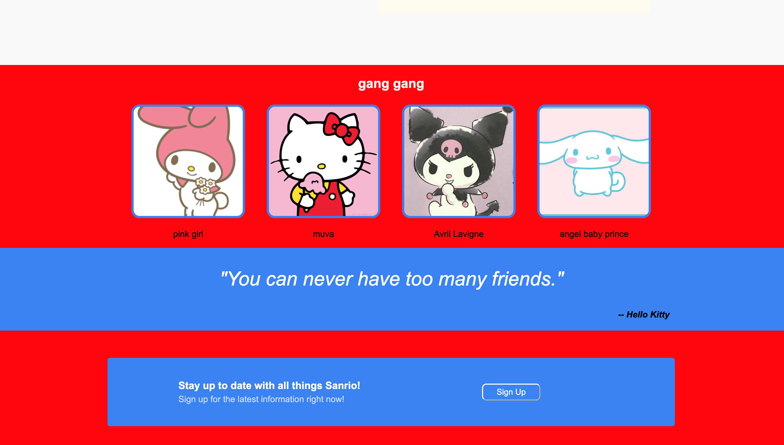
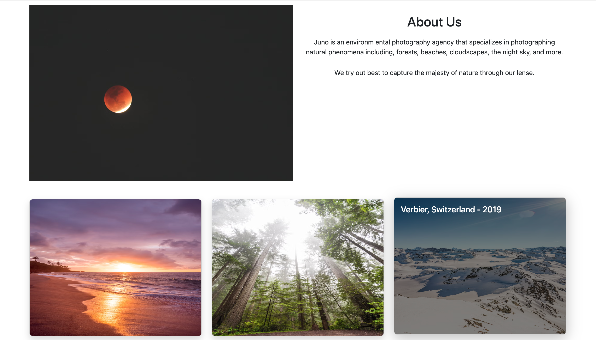

My Projects

Stiegler Basics
For this group project, four other fellow cohort members and I created a basic e-commerce site using HTML, CSS, Bootstrap, Agile methodologies and UI/UX best practices.
GitHub

Sanrio Fanpage
This webpage was created in HTML and CSS using a template provided by The Odin Project.

Juno Photography
For this project, I applied the basic concepts of the Bootstrap CSS framework to create a simple and responsive website. This project utilized core features of Bootstrap, such as the grid system, components, and utilities.
GitHub